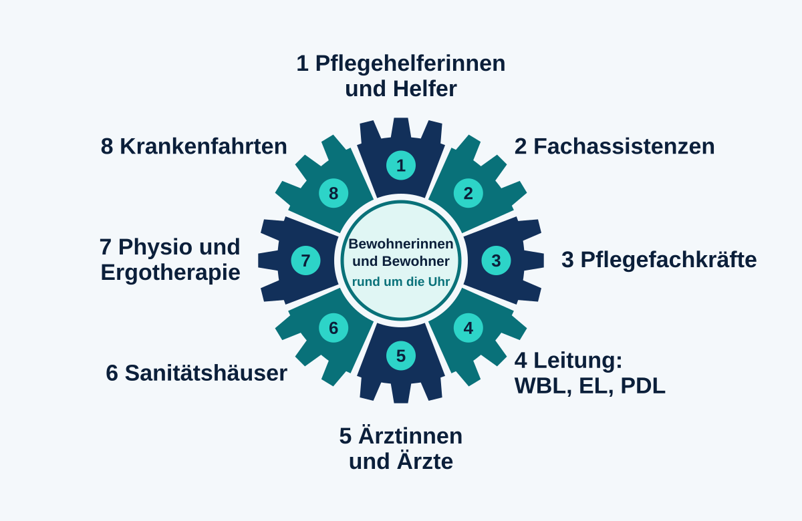

Ich finde es fantastisch, wie in der Pflege alle zusammenarbeiten, auch unter Umständen, die manchmal richtig schwierig sind. Heute möchte ich mir die Zeit nehmen und einmal Danke sagen, an alle, die dabei mitwirken, auch an die, die man im Alltag selten sieht.
Ein Zahnrad, das nie stillsteht
Wenn ich an die Versorgung von Menschen denke, sehe ich ein großes Zahnrad vor mir. Es dreht sich Tag und Nacht, an jedem Wochenende und an jedem Feiertag. Es läuft nur, weil alle Zähne ineinandergreifen. Fehlt einer, merkt man es sofort, und deshalb ist jeder Zahn wichtig, ob groß oder klein.

Wer alles zu diesem Zahnrad gehört
Im Alltag sind es zuerst die Menschen am Bett und im Wohnbereich. Die Helferinnen und Helfer, die Fachassistenzen und die Pflegefachkräfte tragen die tägliche Versorgung. Dahinter stehen die Wohnbereichsleitung (WBL), die Einrichtungsleitung (EL) und die Pflegedienstleitung (PDL). Sie halten Dienstpläne, Absprachen und Verantwortung zusammen, und das ist oft eine Arbeit, die man von außen kaum sieht.
Dazu kommen alle, die von außen mitwirken. Ärztinnen und Ärzte, die Sanitätshäuser, die Hilfsmittel liefern und anpassen, die Physiotherapie und die Ergotherapie, die Menschen in Bewegung bringen und Selbstständigkeit erhalten, und die Fahrerinnen und Fahrer der Krankenfahrten, die Bewohner sicher zu Terminen und wieder zurück bringen. Ohne sie alle ginge es nicht, und ich möchte das ausdrücklich sagen.
Organisation und Bürokratie: spannend und notwendig
Mich fasziniert, was hinter der Versorgung an Organisation steckt. Da ist viel Arbeit drin, und ja, auch viel Bürokratie. Jeder muss sich an die vorgeschriebenen Abläufe halten, damit alles funktioniert und zusammenhält. Das empfinde ich nicht als Last, sondern als das, was das System trägt. Wenn jeder weiß, was seine Aufgabe ist und wann sie dran ist, kann sich der nächste darauf verlassen.
Ich finde diese organisatorischen Aufgaben spannend, und ich freue mich, ein Teil davon zu sein.
Und alles läuft für die Menschen in der Mitte
Am Ende ist das alles nur gut für die Bewohner, damit sie rund um die Uhr versorgt sind. Das Zahnrad läuft für die Menschen, die unsere tägliche Hilfe und unser Mitgefühl brauchen. Genau deshalb steht in meiner Zeichnung die Mitte frei, denn sie ist der Grund, warum alle anderen sich drehen.
Wenn ich abends nach Hause gehe, denke ich oft daran, wie viele Hände an einem einzigen Tag zusammengearbeitet haben, damit ein Mensch gut versorgt war, gewaschen, begleitet, gefahren, bewegt, versorgt und gehört. Das berührt mich.
Du gehörst auch zu diesem Zahnrad, zum Beispiel als Sanitätshaus, ambulanter Dienst, Praxis für Physiotherapie oder Ergotherapie, Anbieter von Krankenfahrten oder als Firma aus dem Umfeld der Pflege? Auf der Seite Kooperation kannst du dich mit deinem Logo eintragen, kostenlos und für mehr Reichweite und für den Austausch. Wer in der Pflege arbeitet oder sich dafür interessiert, kann auch hier mitschreiben. Schreib mir gerne eine Mail an vollmer.steffen@icloud.com mit dem Betreff Pflegelaborblog.